용접산업기사 (2013-08-18 기출문제)
1과목: 용접야금 및 용접설비제도
1. 알루미늄판을 가스 용접할 때 사용되는 용제로 적합한 것은?
- 중탄산소다 + 탄산소다
- 염화나트륨, 염화칼륨, 염화리튬
- 염화칼륨, 탄산소다, 붕사
- 붕사, 영화리튬
(정답률: 69%)

2. 금속의 일반적인 특성 중 틀린 것은?
- 금속 고유의 광택을 가진다.
- 전기 및 열의 양도체 이다.
- 전성 및 연성이 좋다.
- 액체 상태에서 결정 구조를 가진다.
(정답률: 86%)
3. 용접 시 적열 취성의 원인이 되는 원소는?
- 산소
- 황
- 인
- 수소
(정답률: 91%)
4. 탄소강의 용접에서 탄소함유량이 많아지면 낮아지는 성질은?
- 인장강도
- 취성
- 연신율
- 압축강도
(정답률: 60%)
5. 냉간 가공만으로 경화되고 열처리로는 경화되지 않으며, 비자성이나 냉간가공에서는 약간의 자성을 갖고 있는 강은?
- 마텐자이트계 스테인리스강
- 페라이트계 스테인리스강
- 오스테나이트계 스테인리스강
- PH계 스테인리스강
(정답률: 67%)
6. 6.67%의 C와 Fe의 화합물로서 Fe3C로서 표기되는 것은?
- 펄라이트
- 페라이트
- 시멘타이트
- 오스테나이트
(정답률: 67%)
7. 탄소강 중에 인(P)의 영향으로 틀린 것은?
- 연신율과 충격값을 증대
- 강도와 경도를 증대
- 결정립을 조대화
- 상온취성의 원인
(정답률: 38%)
8. 다음 금속 중 면심입방격자(FCC)에 속하는 것은?
- 니켈, 알루미늄
- 크롬, 구리
- 텅스텐, 바나듐
- 몰리브덴, 리튬
(정답률: 64%)
9. 금속의 결정계와 결정격자 중 입방정계애 해당하지 않는 결정격자의 종류는?
- 단순입방격자
- 체심입방격자
- 조밀일방격자
- 체심정입방격자
(정답률: 43%)
10. 용접 결함의 종류 중 구조상 결함에 포함되지 않는 것은?
- 용접균열
- 융합불량
- 언더컷
- 변형
(정답률: 78%)
11. 인접부분, 공구, 지그 등의 위치를 참고로 나타내는데 사용하는 선의 명칭은?
- 지시선
- 외형선
- 가상선
- 파단선
(정답률: 61%)
12. 용접 이음을 할 때 주의할 사항으로 틀린 것은?
- 맞대기 용접에서 뒷면에 용입 부족이 없도록 한다.
- 용접선은 가능한 서로 교차하게 한다.
- 아래보기 자세 용접을 많이 사용하도록 한다.
- 가능한 용접량이 적은 홈 형상을 선택한다.
(정답률: 84%)
13. 다음 치수기입 방법의 일반 형식 중 잘못 표시된 것은?
- 각도 치수 :
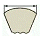
- 호의 길이 치수 :
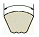
- 현의 길이 치수 :
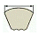
- 변의 길이 치수 :
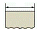
(정답률: 85%)
14. 기계재료 표시방법 중 SF340A에서 “340”은 무엇을 표시하는가?
- 평균 탄소 함유량
- 단조품
- 최저 인장 강도
- 최고 인장 강도
(정답률: 81%)
15. 용접부의 비파괴 시험 보조기호 중 잘못 표기된 것은?
- RT : 방사선투과 시험
- UT : 초음파탐상 시험
- MT : 침투탐상 시험
- ET : 와류탐상 시험
(정답률: 77%)
16. 도면의 명칭에 관한 용어 중 잘못된 것은?
- 제작도 : 건설 또는 제조에 필요한 모든 정보를 전달하기 위한 도면이다.
- 시공도 : 설계의 의도와 계획을 나타낸 도면이다.
- 상세도 : 건조물이나 구성재의 일부에 대해서 그 형태, 구조 또는 조립, 결합의 상세함을 나타낸 것이다.
- 공정도 : 제조공정의 도중 상태, 또는 일련의 공정 전체를 나타낸 것이다.
(정답률: 68%)
17. 제 3각법에 대한 설명으로 틀린 것은?
- 제3상한에 놓고 투상하여 도시하는 것이다.
- 각 방향으로 돌아가며 비춰진 투상도를 얻는 원리이다.
- 표제란에 제 3각법의 그림 기호로
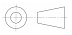
과 같이 표시한다. - 투상도를 얻는 원리는 눈 -> 투상면 -> 물체 이다.
(정답률: 55%)
18. 다음 [그림]에서 2번의 명칭으로 알맞은 것은?(오류 신고가 접수된 문제입니다. 반드시 정답과 해설을 확인하시기 바랍니다.)
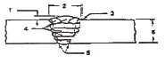
- 용접 토우
- 용접 덧살
- 용접 루트
- 용접 비드
(정답률: 77%)
19. 사투상도에 있어서 경사축의 각도로 적합하지 않는 것은?
- 15°
- 30°
- 45°
- 60°
(정답률: 68%)
20. 기계재로의 재질을 표시하는 기호 중 기계 구조용강을 나타내는 기호는?
- Al
- SM
- Bs
- Br
(정답률: 91%)
2과목: 용접구조설계
21. 맞대기 용접 시험편의 인장강도가 650N/mm2 이고, 모재의 인장 강도가 700N/mm2 일 경우에 이음 효율은 약 얼마인가?
- 85.9%
- 90.5%
- 92.9%
- 98.2%
(정답률: 67%)
22. 용접이음 설계시 일반적인 주의사항 중 틀린 것은?
- 가급적 능률이 좋은 아래보기 용접을 많이 할 수 있도록 설계한다.
- 후판을 용접할 경우는 용입이 깊은 용접법을 이용하여 용착량을 줄인다.
- 맞대기 용접에는 이면 용접을 할 수 있도록 해서 용입 부족이 없도록 한다.
- 될 수 있는 대로 용접량이 많은 홈 형상을 선택한다.
(정답률: 85%)
23. 그림과 같이 폭 50 mm, 두께 10 mm의 강판을 40 mm만을 겹쳐서 전둘레 필릿 용접을 한다. 이 때 100 kN의 하중을 작용시킨다면 필릿 용접의 치수는 얼마로 하면 좋은가? (단, 용접 허용응력은 10.2 kN/cm2)
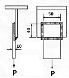
- 약 2 mm
- 약 5 mm
- 약 8 mm
- 약 11 mm
(정답률: 47%)
24. 용접부를 기계적으로 타격을 주어 잔류 응력을 경감시키는 것은?
- 저온 응력 완화법
- 취성 경감법
- 역변형법
- 피닝법
(정답률: 89%)
25. 다음 [그림]과 같이 균열이 발생했을 때 그 양단에 정지구멍을 뚫어 균열진행을 방지하는 것은?
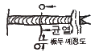
- 브로우 홀
- 핀 홀
- 스톱 홀
- 웜 홀
(정답률: 83%)
26. 다음 [그림]과 같이 일시적인 보조판을 붙이든지 변형을 방지할 목적으로 시공되는 용접변형 방지법은?
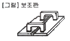
- 억제법
- 피닝법
- 역변형법
- 냉각법
(정답률: 81%)
27. 용착 금속부 내부에 발생된 기공결함 검출에 가장 좋은 검사법은?
- 누설 검사
- 방사선 투과 검사
- 침투 탐상 검사
- 자분 탐상 검사
(정답률: 81%)
28. 용접부에 형성된 잔류응력을 제거하기 위한 가장 적합한 열처리 방법은?
- 담금질을 한다.
- 뜨임을 한다.
- 불림을 한다.
- 풀림을 한다.
(정답률: 83%)
29. 용접 이음부 형상의 선택시 고려사항이 아닌 것은?
- 용접하고자 하는 모재의 성질
- 용접부에 요구되는 기계적 성질
- 용접할 물체의 크기, 형상, 외관
- 용접 장비 효율과 용가재의 건조
(정답률: 74%)
30. 이면 따내기 방법이 아닌 것은?
- 아크 에어 가우징
- 밀링
- 가스 가우징
- 산소창 절단
(정답률: 51%)
31. 아크 용접 중에 아크가 전류 자장의 영향을 받아 용접비드(bead)가 한쪽으로 쏠리는 현상은?
- 용융 속도
- 자기 불림
- 아크 부스터
- 전압강하
(정답률: 73%)
32. 용착 금속의 인장강도를 구하는 식은?
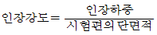
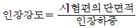
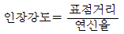
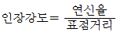
(정답률: 62%)
33. 용접이음의 안전율을 나타내는 식은?
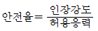
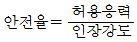
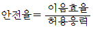
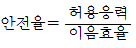
(정답률: 67%)
34. 용접부 검사에서 파괴 시험에 해당되는 것은?
- 음향 시험
- 누설 시험
- 형광 침투 시험
- 함유 수소 시험
(정답률: 55%)
35. 용접 이음의 종류 중 겹치기 이음은?
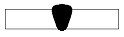
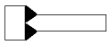
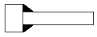
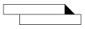
(정답률: 87%)
36. 초음파 경사각 탐상 기호는?
- UT - A
- UT
- UT - N
- UT - S
(정답률: 52%)
37. 일반적으로 피로 강도는 세로축에 응력 (S), 가로축에 파괴까지의 응력 반복 회수 (N)를 가진 선도로 표시한다. 이 선도를 무엇이라 부르는가?
- B - S 선도
- S - S 선도
- N - N 선도
- S - N 선도
(정답률: 88%)
38. 다음 중 똑같은 용접조건으로 용접을 실시하였을 때 용접변형이 가장 크게 되는 재료는 어떤 것인가?
- 연강
- 800MPa급 고장력강
- 9% Ni강
- 오스테나이트계 스테인리스강
(정답률: 61%)
39. 용접금속 근방의 모재에 용접열에 의해 급열, 급랭되는 부위가 발생하는데 이 부위를 무엇이라 하는가?
- 본드(bond)부
- 열영향부
- 세립부
- 용착금속부
(정답률: 69%)
40. 제품 제작을 위한 용접순서로 옳지 않은 것은?
- 수축이 큰 맞대기 이음을 먼저 용접한다.
- 리벳과 용접을 병용할 경우 용접이음을 먼저 한다.
- 큰 구조물은 끝에서부터 중앙으로 향해 용접한다.
- 재칭적으로 영접을 한다.
(정답률: 57%)
3과목: 용접일반 및 안전관리
41. 가스용접 작업시 점화할 때, 폭음이 생기는 경우의 직접적인 원인이 아닌 것은?
- 혼합가스의 배출이 불완전했다.
- 산소와 아세틸렌 압력이 부족했다.
- 팁이 완전히 막혔다.
- 가스분출 속도가 부족했다.
(정답률: 58%)
42. 피복아크용접에서 보통 용접봉의 단면적 1mm2 에 대한 전류밀도로 가장 적합한 것은?
- 8 ~ 9A
- 10 ~ 13A
- 14 ~ 18A
- 19 ~ 23A
(정답률: 67%)
43. 용접 작업에서 전격의 방지대책으로 틀린 것은?
- 용접기 내부에 함부로 손을 대지 않는다.
- 홀더나 용접봉은 맨손으로 취급하지 않는다.
- 보호구는 반드시 착용하지 않아도 된다.
- 습기찬 작업복, 장갑 등을 착용하지 않는다.
(정답률: 93%)
44. 피복아크 용접용 기구 중 보호구가 아닌 것은?
- 핸드 실드
- 케이블 커넥터
- 용접 헬멧
- 팔 덮게
(정답률: 92%)
45. 서브머지드 아크 용접의 장점에 속하지 않는 것은?
- 용융속도 및 용착 속도가 빠르다.
- 용입이 깊다.
- 용접 자세에 제약을 받지 않는다.
- 대 전류 사용이 가능하여 고 능률적이다.
(정답률: 76%)
46. 자동가스절단기(산소-프로판)의 사용은 어떤 경우에 가장 유리한가?
- 특수강의 절단
- 형강의 절단
- 비철금속의 절단
- 곧고 긴 저탄소강의 절단
(정답률: 56%)
47. 알루미늄을 TIG 용접할 때 가장 적합한 전류는?
- DCSP
- DCRP
- ACHF
- AC
(정답률: 67%)
48. 피복 아크 용저의 피복제 중 슬래그(Slag) 생성제가 아닌 것은?
- 셀룰로오스
- 산화티탄
- 이산화망간
- 산화철
(정답률: 49%)
49. 탄산가스아크용접이 피복아크용접에 비해 장점이라고 볼 수 없는 것은?
- 전류 밀도가 높으므로 용입이 깊고 용접 속도가 빠르다.
- 박판용접은 단락이행 용접법에 의해 가능하다.
- 슬래그 섞임이 없고 용접후 처리가 간단하다.
- 적용 재질은 비철금속 계통에만 가능하다.
(정답률: 73%)
50. 피복아크 용접작업의 기초적인 용접조건으로 가장 거리가 먼 것은?
- 용접속도
- 아크길이
- 스팃아웃길이
- 용접전류
(정답률: 91%)
51. 연강용 피복아크 용접봉 E4316의 피복제 계통은?
- 저수소계
- 고산화티탄계
- 일미나이트계
- 철분산화철계
(정답률: 90%)
52. 가스 용접용으로 사용되는 가스가 갖추어야 할 성질에 해당되지 않는 것은?
- 불꽃의 온도가 높을 것
- 연소속도가 빠를 것
- 발열량이 적을 것
- 용융금속과 화학반응을 일으키지 않을 것
(정답률: 80%)
53. 1차 입력 전원 전압이 220 V인 용접기의 정격용량이 20 kVA라면 가장 적합한 퓨즈의 용량은?
- 50
- 100
- 150
- 200
(정답률: 63%)
54. 자동 및 반자동 용접이 수동 아크 용접에 비하여 우수한 점이 아닌 것은?
- 와이어 송급 속도가 빠르다.
- 용입이 깊다.
- 위보기 용접 자세에 적합하다.
- 용착금속의 기계적 성질이 우수하다.
(정답률: 85%)
55. 용접법의 종류 중 알루미늄 합금재료의 용접이 불가능한 것은?
- 피복 아크용접
- 탄산가스 아크용접
- 불활성가스 아크용접
- 산소 - 아세틸렌 가스용접
(정답률: 39%)
56. 불활성 가스 금속 아크 용접에서 와이어 송급 방식이 아닌 것은?
- 위빙 방식
- 푸시 방식
- 풀 방식
- 푸시 - 풀 방식
(정답률: 86%)
57. 아크용접 중 방독마스크를 쓰지 않아도 되는 용접재료는?
- 연강
- 황동
- 아연도금판
- 카드뮴합금
(정답률: 74%)
58. 알루미늄 용재로 사용되지 않는 것은?
- 붕사
- 염화나트륨
- 영화칼륨
- 염화리튬
(정답률: 76%)
59. 텅스텐 전극봉을 사용하는 용접은?
- 산소 - 아세틸렌 용접
- 피복 아크용접
- MIG 용접
- TIG 용접
(정답률: 90%)
60. 가스절단 진행 중 열량을 보충하는 예열불꽃으로 사용되지 않는 것은?
- 산소 - 탄산가스 불 꽃
- 산소 - 아세틸렌 불꽃
- 산소 - LPG 불꽃
- 산소 - 수소 불꽃
(정답률: 42%)